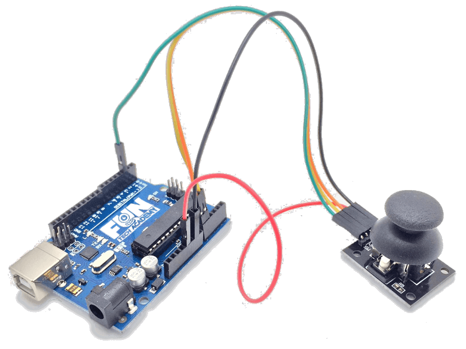

En este tema veremos como funciona el motor paso a paso 28BYJ-48.
(1) x Placa Arduino
(1) x Motor Paso a Paso 28BYJ-48
(1) x Adaptador basado en el chip ULN2003A
(1) x Protoboard
(-) x M M cables (cables puente de macho a macho)
Un motor paso a paso (también llamado stepper) es un dispositivo electromagnético que convierte impulsos eléctricos en movimientos mecánicos de rotación.

La principal característica de estos motores es que se mueven un paso por cada impulso que reciben.
Normalmente los pasos pueden ser de 1,8º a 90º por paso, dependiendo del motor. Por ejemplo: un motor paso a
paso que se mueve 2º cada paso, quiere decir que para completar una vuelta (360º) tendrá que dar
(360º/2º por paso) 180 pasos.
Son motores con mucha precisión, que permiten quedar fijos en una posición (como un servomotor) y también
son capaces de girar libremente en un sentido u otro (como un motor DC).
Hay tres tipos de motores paso a paso:
- Motor paso a paso de imán permanente (los que usaremos en este tutorial).
- Motor paso a paso de reluctancia variable.
- Motor paso a paso hibrido.
Los Motores paso a paso están formados por dos partes:
- El estator es la parte fija del motor donde sus cavidades van depositadas las bobinas.
- El rotor es la parte móvil del motor construido por un imán permanente.
Estas dos partes van montadas sobre un eje.

El motor 28BYJ-48 es un pequeño motor paso a paso unipolar.
Las características eléctricas del 28BYJ-48 son modestas, pero incorpora un reductor integrado que lo
convierte en un componente mucho más útil e interesante.
El 28BYJ-48 tiene un paso de 5.625 grados (64 pasos por vuelta). El reductor interno tiene una relación
de 1/64 (exactamente es de 1/63.6875). Combinados, la precisión total es de 4096 pasos por vuelta,
equivalente a un paso de 0.088º, que es una precisión muy elevada.
La alimentación del motor es 5V o 12V según modelo, siendo más habitual el modelo de 5V. Físicamente ambos
modelos son idénticos, por lo que para saber la tensión nominal deberemos mirar la etiqueta del motor.
El 28BYJ-48 tiene un par máximo tras el reductor de 3N•cm (0.3Kgf•cm). La frecuencia máxima es de 100Hz, lo
que supone unos 40 segundos por vuelta, o equivalentemente una velocidad de giro máxima en torno a 1.5 rpm.
La resistencia y el consumo eléctrico varían con el modelo de 28BYJ-48. En los modelos de 5V es de 60 Ohm,
lo que supone un consumo de 83mA. Los modelos de 12V tienen resistencias de 130-380 Ohm, y consumos de 71
a 32mA.
Para el control podemos emplear una placa con el chip integrado ULN2003. Normalmente el 28BYJ-48 se
suministra con esta placa, y ambos dispositivos disponen clemas para una conexión sencilla.

El 28BYJ-48 es un motor ampliamente utilizado en aplicaciones industriales, como el control de válvulas
hidráulicas y neumáticas. En el campo de los hobbies, podemos usar el 28BYJ-48 para hacer pequeños robots
articulados, brazos robóticos, posicionar sensores, girar la mesa de un escanner o mover una impresora 3D.
Otras características básicas de este tipo de motores son:
- Motor paso a paso con 5 cables (unipolar 4 bobinas).
- Torque de 34 Newton Metro más o menos 35 gramos por cm.
- Viene con un circuito integrado.
- 4 LEDs que indican cuando se excita una bobina.
- 4 resistencias para proteger los LEDs.
- Chip ULN2003 que contiene 3 transistores Darlington.
- 4 entradas para el controlador, por donde entran los pulsos.
- Jumpers para seleccionar el voltaje de funcionamiento (5V o 12V).
- Hay que puentear el voltaje que no se utiliza.
- Caja reductora mediante engranajes 1/64.
- Se consigue un paso de 5,625/64 = 0,088º.
Antes de ver las conexiones, hay que aclarar que este tipo de motores lleva un driver o etapa de potencia.
Este componente nos permite suministrar la energía suficiente al motor paso a paso para que se mueva.
Para el control del 28BYJ-48 vamos a usar una placa con el integrado ULN2003. El ULN2003 es una agrupación
de 7 Par Darlington de los cuales usaremos 4, uno por cada fase del motor paso a paso.
Un par Darlington es un dispositivo que nos permite suministrar una corriente superior a las que podríamos
usando las salidas de Arduino directamente.
El 28BYJ-48 es un motor unipolar, por lo que no necesitamos invertir la corriente que atraviesa las bobinas
para hacerlo funcionar.
Aplicando un control todo o nada, es decir, encendiendo por completo o apagando por completo una bobina,
únicamente tenemos que activar las bobinas en la secuencia correcta.
Existen varias secuencias posibles. A continuación vamos a ver las tres más empleadas.
En secuencia de 1-fase encendemos una única bobina cada vez.

Llevando esta secuencia de encendido a una tabla, que posteriormente usaremos para el código, la secuencia quedaría de la siguiente forma.

En la secuencia en 2-fases encendemos dos bobinas correlativas en cada fase. Al hacer trabajar dos bobinas simultáneamente en cada paso el campo magnético generado es superior (un 41% más) por lo que el motor tiene más par y, en general, presenta un mejor comportamiento. Como punto negativo, aumentamos el consumo energético al doble.

Que expresado en forma de tabla resulta.

La última secuencia que vamos a ver es la secuencia en medio paso (half-step). Aquí encendemos
alternativamente uno y dos bobinas.
Con esta secuencia conseguimos una precisión de la mitad del paso. El par desarrollado varía ya que en
algunos pasos activamos dos bobinas y en otras solo una, pero a la vez el giro se encuentra más "guiado",
por lo que en general ambos efectos se compensan y el funcionamiento es bueno, salvo en aplicaciones donde
estemos muy al límite del par máximo.

Expresando la secuencia en forma de tabla resulta.


Haremos uso de una biblioteca diseñada para estos motores que hará nuestro código corto y sencillo.
Incluimos la biblioteca al principio de nuestro código y luego mediante simples comandos podemos controlar
el comportamiento del motor. El archivo lo descargaremos de
aquí
Una vez efectuado todo el cableado, descargaremos el script del siguiente
enlace y lo cargaremos como hemos aprendido.
Utilizaremos nuevas funciones que tenemos que manejar de la librería Stepper.
Tenemos que definir el número de pasos que nuestro motor tiene por vuelta. 512 para el motor 28BYJ-48.
#define PASOS 512
Creamos una instancia de la clase Stepper, pasándole los pines de control definidos. La llamaremos "motor"
Stepper motor(PASOS, Pin1, Pin2, Pin3, Pin4);
Fijamos la velocidad del motor en revoluciones por minutop (rpm). En este caso, 25.
motor.setSpeed(25);
Por último, movemos el motor un número determinado de pasos.
motor.step(200);
Ahora que ya sabemos la forma de controlar los motores paso a paso, vamos a hacer un pequeño proyecto con un
motor bipolar. Con un potenciómetro regularemos la velocidad de este, y con dos pulsaremos seleccionaremos
el sentido de giro.
/*
www.diymakers.es
by A.García
Mover motores paso a paso con Arduino
Tutorial en: http://diymakers.es/mover-motores-paso-paso-con-arduino/
*/
#include